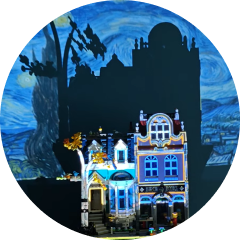
Starry Night
immersion and atmosphere
Experience Designer & Creative Technologist
Projects created with HeavyM and Touchdesigner.
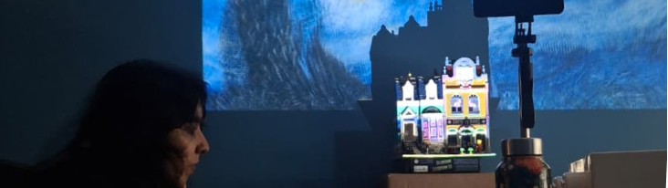
Being my first venture into Lego projection mapping, I tested out multiple variations and stories on this one structure: the Lego 10270 Bookshop set.
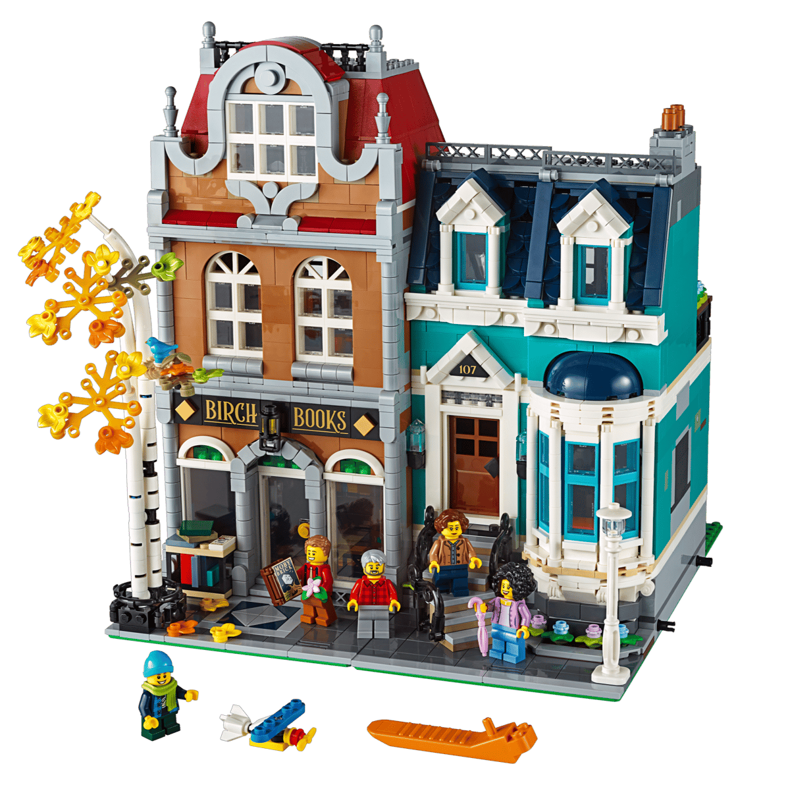

immersion and atmosphere
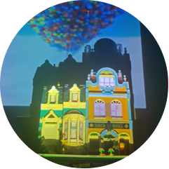
theming and narrative
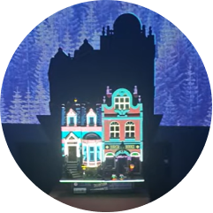
theming
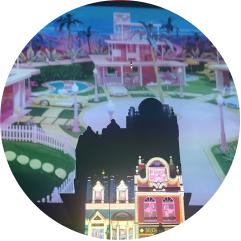
environment
an atmospheric, immersive experience featuring Touchdesigner visuals.
Projection mapping experiment inspired by Barbie.
Inspired by Pixar's Up.
This experiment proved difficult, casting light colours like the original house onto a darker Lego set.
experiments with colour-matching, inspired by the failures of the Up Lego test.
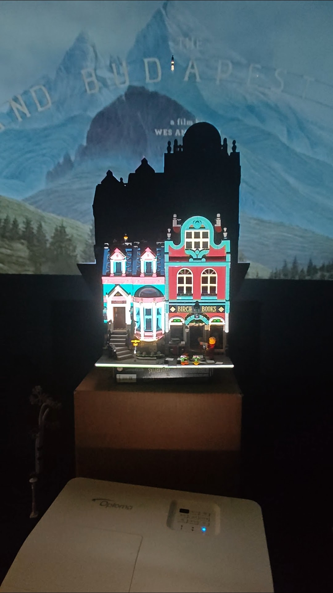
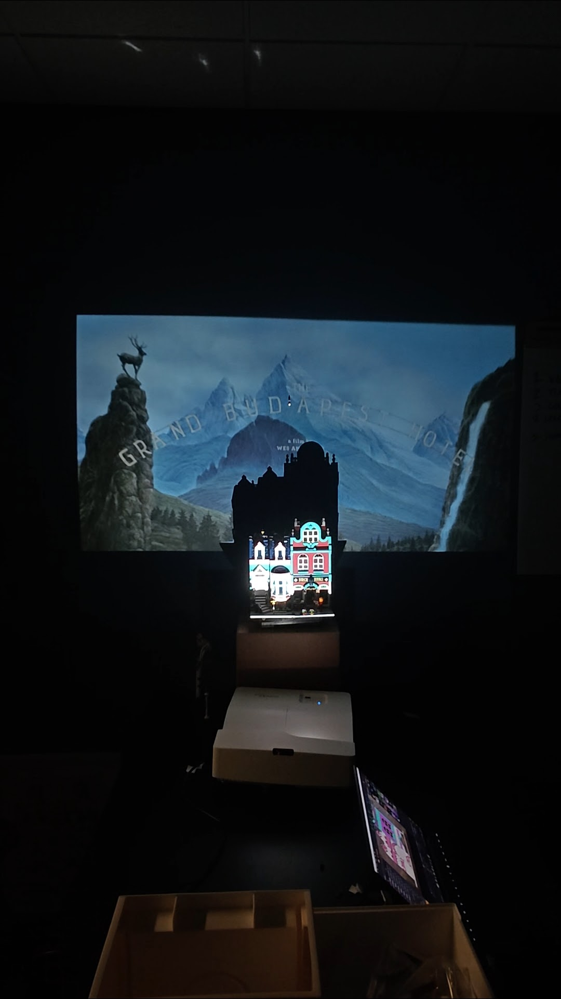
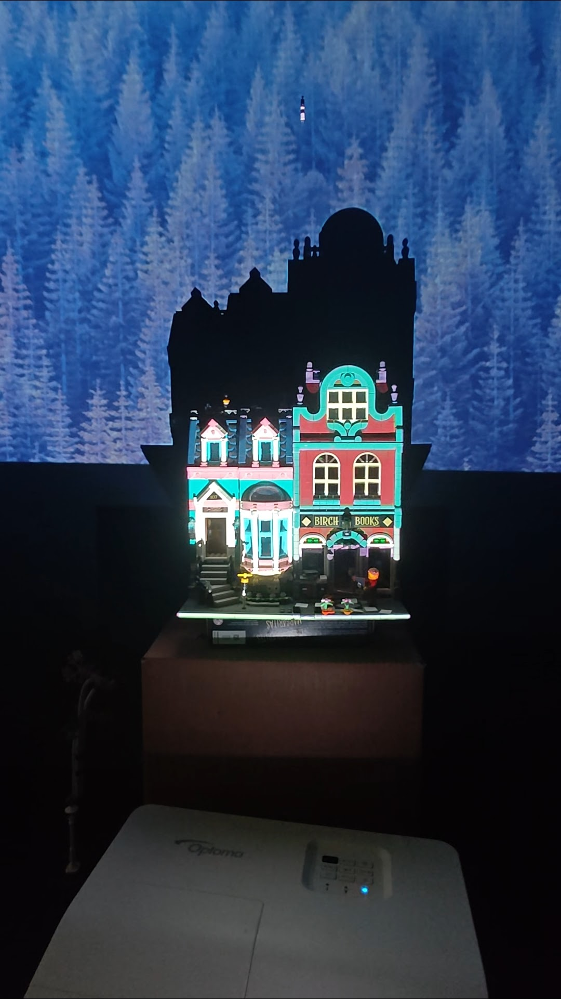
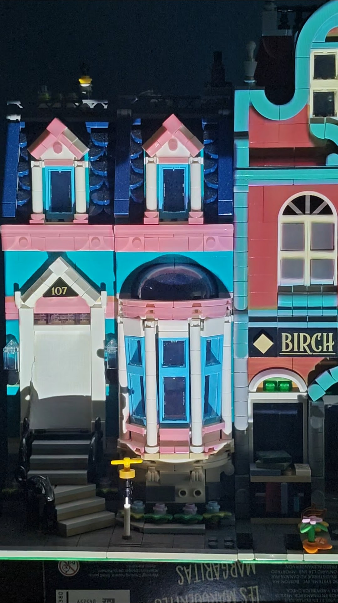
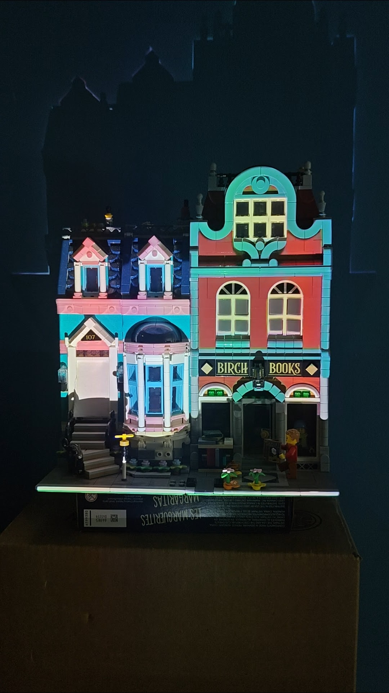
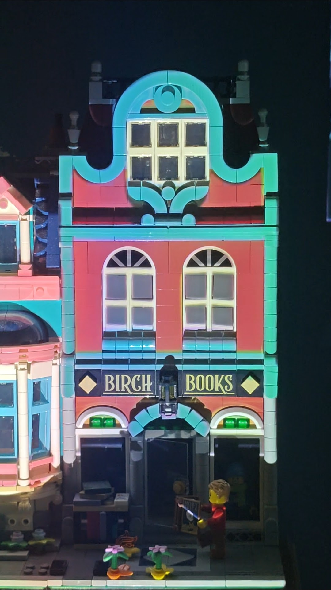
Theme-park ride inspired, this Lego set was projection mapped from fine-details to the bigger picture. Set details: Lego 77015 Temple of the Golden Idol
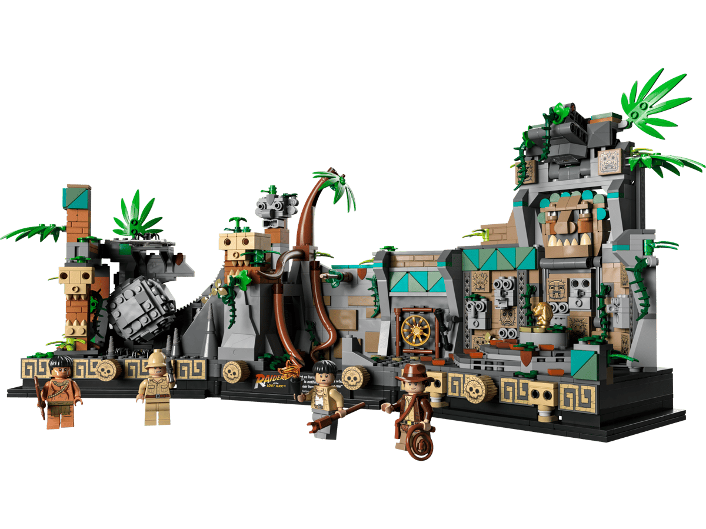
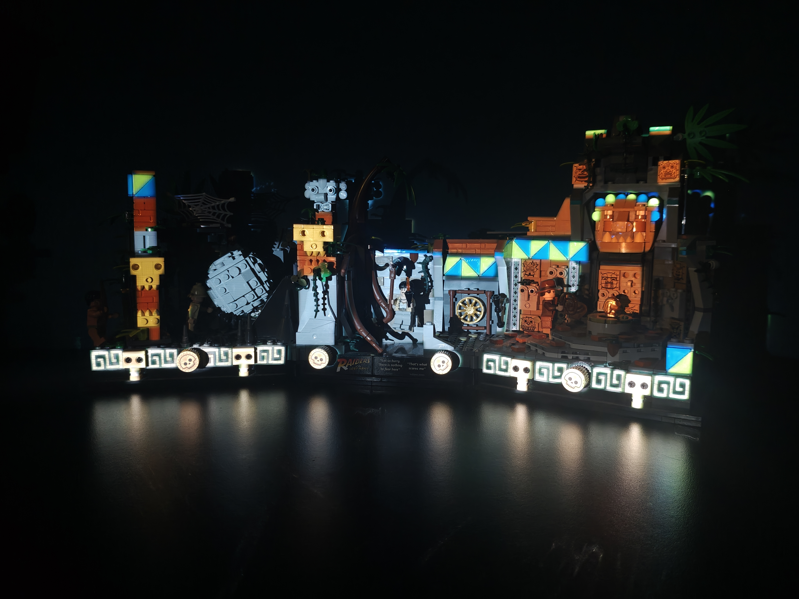
Looking at this set, I knew each minifigure's distinct personality had to be showcased. Keeping to Lego's minimal block-based design structure, I used some basic HeavyM line effects to create this piece.
Created using the Everyone Is Awesome #40516 Lego Set.
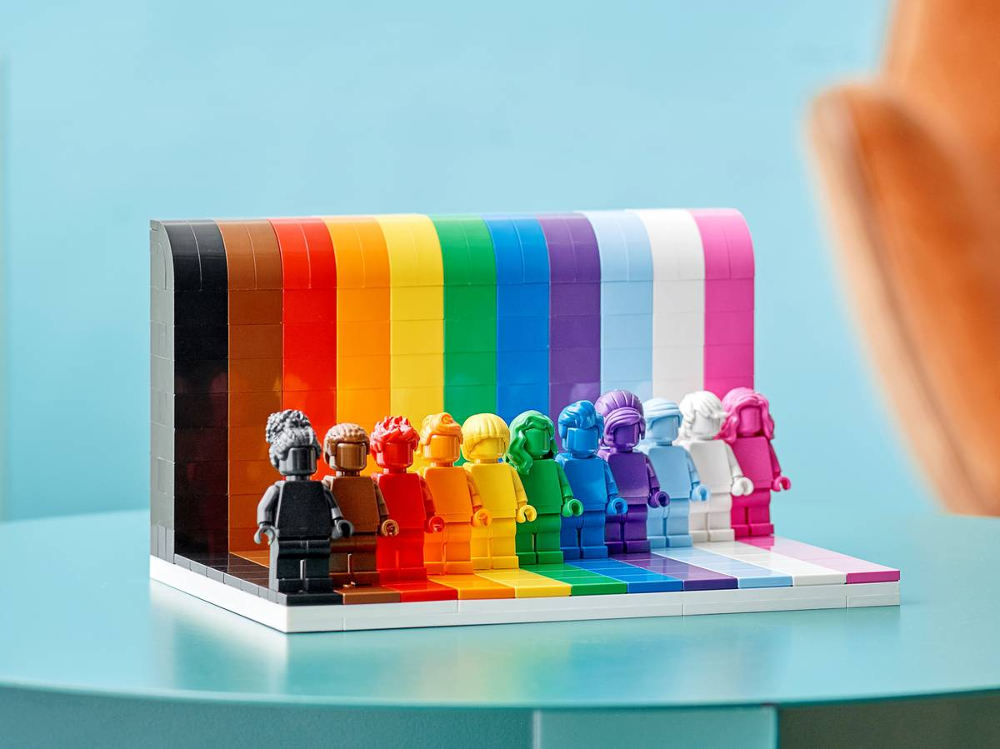
Projecting into darkness is difficult. However, interesting narratives can be
created by projecting into windows, doors, and inner Lego surfaces.
Can
be combatted by building an inner layer with white bricks, or using precisely
cut stickers on these surfaces.
The angle of the projector matters! Each Lego build is different and sometimes has overhanging parts that can cast shadows, and prevent light from hitting all surfaces of the set. This can also break the immersion of the projection.
Sets with moving parts need dynamic projections, or they run the risk of an offset projection if the guests move certain parts, even if we secure the projector and the Lego set themselves down.
To the Entertainment Technology Center's Outreach, Extension, and Engagement Team for letting me play around with their Lego sets!
I have created extensive documentation exploring limitations, replayability, and making Lego sets more interactive with projection mapping.